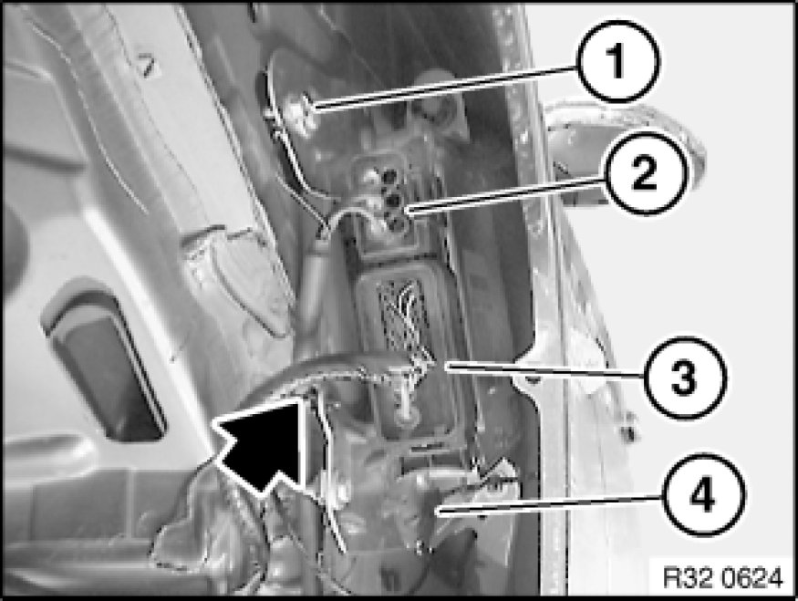
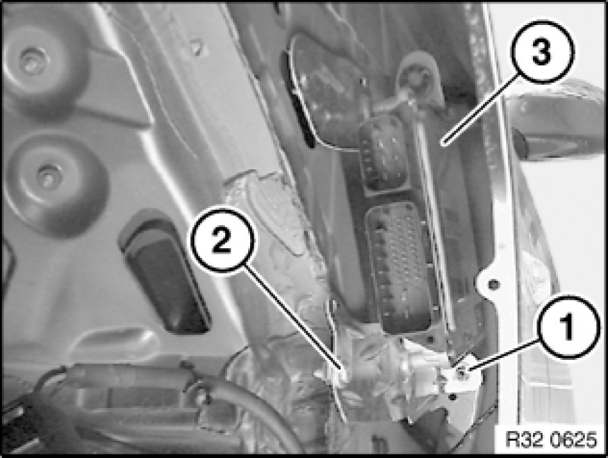

Steering Control Module: Service and Repair
32 43 010 - Removing and installing/replacing control unit for active front steering

Important!
Read and comply with notes on protection against electrostatic damage (ESD protection) 61 35 ... Notes on ESD Protection (Electro Static Discharge).

Necessary preliminary tasks:
- Disconnect battery negative lead 61 20 900 Disconnecting and Connecting Battery Negative Lead
- Remove front left wheel arch cover (rear section) 51 71 039 Removing and Installing/Replacing Front Left or Right Wheel Arch Cover (Rear Section)

Release screw (1) and remove grounding cable.
Unlock plug (2) with a suitable tool and detach.
Open cable tie (arrowed).
Unclip cable holder (4).
Unlock plug (3) with a suitable tool and detach.
Installation Note:
Replace faulty cable holder (4).

Unscrew nut (1).
Tightening torque 32 43 1AZ 32 43 Electronic Power Steering.
Release screw (2).
Tightening torque 32 43 1AZ 32 43 Electronic Power Steering.
Remove active front steering control unit (3).
After installation:
- Replacement only: Carry out programming/coding Programming and Relearning
- Carry out adjustment for active front steering 32 10 005 Adjustment For Active Front Steering